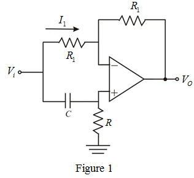
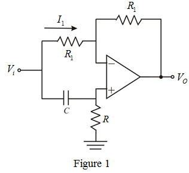

Refer to Figure 16.14 in the textbook for the op amp-RC circuit.
Redraw the circuit by interchanging resistor  and capacitor
and capacitor  as shown in Figure 1.
as shown in Figure 1.

Refer to Figure 16.14 in the textbook for the op amp-RC circuit.
Redraw the circuit by interchanging resistor and capacitor as shown in Figure 1.

For the circuit, the voltage at non-inverting terminal is,
The current is,
By virtual ground concept, .
The output voltage is,
Substitute for and for in the equation.
Simplify further.
At low frequencies, the phase shift is,
At high frequencies, the phase shift is,
Therefore, it is proved that, for the circuit, the resulting phase shift covers over zero to infinite frequencies.